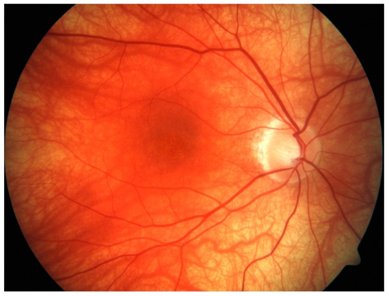
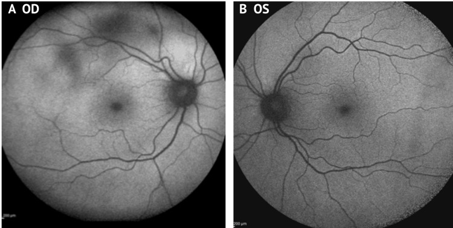
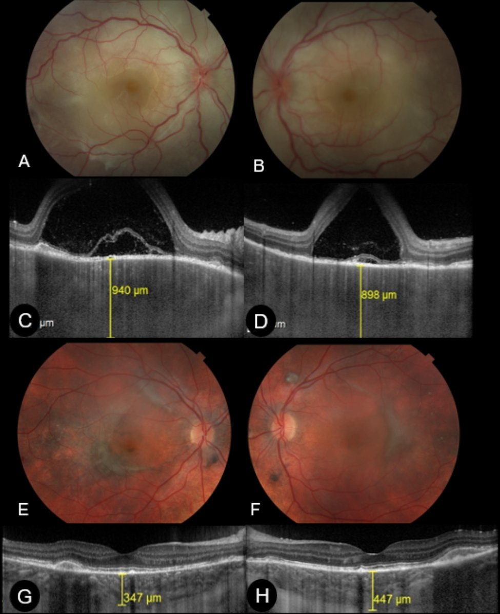
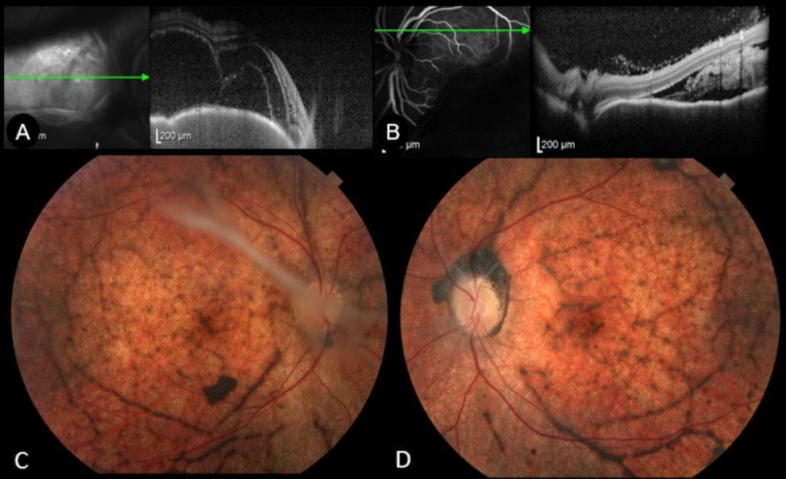
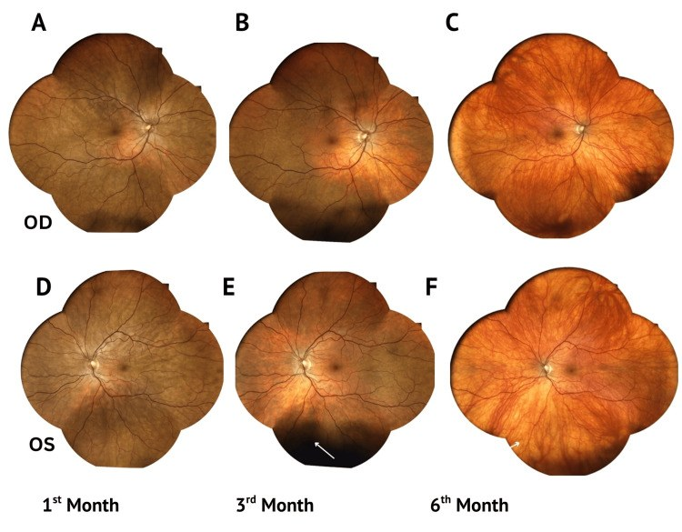
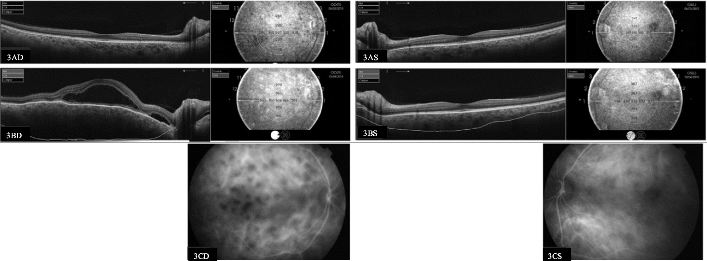
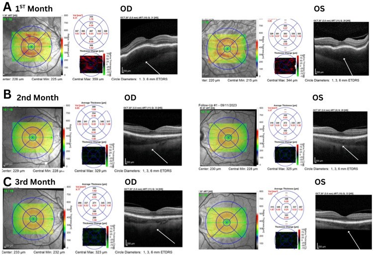

1436 — Bệnh Vogt–Koyanagi–Harada (VKH): viêm toàn hắc mạc hai bên + bong võng mạc thanh dịch / Vogt-Koyanagi-Harada disease
Tags: pattern:viem-hac-mac pattern:bong-vong-mac-thanh-dich pattern:day-hac-mac pattern:sunset-glow pattern:balad pattern:viem-mang-bao-dau pattern:hai-ben pattern:viem-toan-hac-mac vung:mat vung:hac-mac vung:vong-mac vung:mong-mat vung:dia-thi vung:tien-phong protocol:OCT protocol:EDI-OCT protocol:FA protocol:ICGA protocol:FAF protocol:B-scan protocol:MRI-so-nao score:Read-2001 score:SUN-2021
Mức chắc chắn (certainty): tổng hợp y văn (literature synthesis) — số liệu lấy từ 2 đoàn hệ có đối chứng/thời gian theo dõi dài (Brazil 33 bệnh nhân, Ý 38 bệnh nhân), 1 nghiên cứu đoàn hệ Nhật 72 bệnh nhân, 1 đoàn hệ Hàn 55 bệnh nhân, 1 loạt 646 bệnh nhân Ấn Độ (thể bong bóng nước), 1 tổng quan cơ chế–chẩn đoán của Herbort, và 2 bộ tiêu chuẩn (Read 2001, SUN 2021). Không có RCT cho liều corticoid ban đầu; phần "pulse vs half-pulse" là nghiên cứu hồi cứu âm tính (không khác biệt) — đã ghi rõ.
Vì sao bài này quan trọng: bài 1435 vừa chốt masquerade do u lympho — bệnh nhân "viêm màng bồ đào tái diễn, corticoid không đỡ". VKH là hình ảnh ngược lại: hai bên, đáp ứng rất tốt với corticoid, nhưng chỉ khi điều trị trong 2–4 tuần đầu. Bỏ sót hoặc điều trị muộn không làm mù ngay, mà để lại sunset glow + xơ hóa dưới võng mạc — mất thị lực vĩnh viễn và không hồi phục dù viêm đã hết. Đây cũng là chẩn đoán phân biệt bắt buộc của viêm màng bồ đào giao cảm (khác ở chỗ có tiền sử chấn thương/phẫu thuật).
Sửa tiền đề của backlog (trung thực nguồn): backlog ghi "PRES/ARIA" như một hàng chẩn đoán phân biệt. Trong y văn VKH không có thực thể tên "ARIA"; tôi không đưa vào ma trận để tránh bịa. Hàng phân biệt thay thế có thật trong nguồn: viêm hắc mạc do thuốc ức chế điểm kiểm miễn dịch (ICI-VKH-like), viêm màng bồ đào giao cảm, viêm củng mạc sau (posterior scleritis), hội chứng thoát dịch hắc mạc (uveal effusion syndrome), CSC hai bên và u lympho nội nhãn (1435).
1. Tổng quan bệnh học – cơ chế hình ảnh – vì sao "hắc mạc" mới là chỗ khởi phát
- Bệnh học: VKH là bệnh tự miễn qua trung gian tế bào T chống lại kháng nguyên tế bào hắc tố (họ tyrosinase: TYR, TRP1, TRP2). Tế bào T (Th1 tiết IFN-γ, Th17 tiết IL-17) thâm nhập mô đệm hắc mạc; tế bào T điều hòa (Treg, IL-10/TGF-β) gắn với giai đoạn lui bệnh. Yếu tố nguy cơ di truyền mạnh nhất: HLA-DRB1*0405 và DRB1*0410 — peptide tyrosinase gắn ưu tiên vào các phân tử này.
- Vì sao hắc mạc, không phải mống mắt: hắc mạc chứa lớp tế bào hắc tố dày nhất cơ thể và nhận ~80% lưu lượng máu mắt. Viêm bắt đầu ở mô đệm hắc mạc (stromal choroiditis), rồi mới lan ra mống mắt/thể mi (viêm màng bồ đào trước) và màng não–tai trong–da. Vì vậy viêm màng bồ đào trước đơn thuần không bao giờ là VKH; và hình ảnh hắc mạc là bằng chứng bắt buộc.
- TẠI SAO hắc mạc DÀY trên EDI-OCT/SS-OCT: viêm mô đệm → phù + thâm nhiễm tế bào + giãn mạch. Bề dày hắc mạc dưới hoàng điểm (SFCT) bình thường 220–360 µm (nhóm chứng 17 mắt, SS-OCT); trong VKH cấp 940 µm và 898 µm (ca nguyên văn dưới đây), tức gấp 2,5–4 lần. Điều trị hiệu quả → SFCT tụt còn 347 / 447 µm sau 1 tháng. Đây là biến số định lượng tốt nhất để theo dõi, vì thay đổi trước khi thị lực đổi.
- TẠI SAO có bong võng mạc thanh dịch (SRD): tăng tính thấm mao mạch hắc mạc vượt khả năng bơm của RPE → dịch tích dưới võng mạc cảm thụ. Trên OCT: vùng giảm phản hồi dưới võng mạc, bờ võng mạc ngoài còn nguyên (khác bong võng mạc do rách: có nếp gấp, màng dịch kính dính). Trên FA: điểm rò rỉ (pinpoint leakage) + đọng thuốc (pooling) ở thì muộn. Tần suất trong VKH cấp: 96,4% mắt lúc vào viện, còn 42,4% ở tháng 1, 9,1% tháng 3, 4,5% tháng 6, 3,0% tháng 9.
- TẠI SAO "BALAD" là dấu hiệu đặc trưng: bacillary layer detachment = tách tại ranh giới myoid/ellipsoid (lớp "bacillary" của tế bào cảm thụ), do áp lực dịch dưới võng mạc tăng rất nhanh trong viêm hắc mạc cấp. Gặp 48,2% mắt lúc vào viện nhưng chỉ 6,1% ở tháng 1 — nó không phải bong võng mạc thanh dịch thông thường và không phải lỗ hoàng điểm. BALAD là yếu tố tiên lượng xấu độc lập: OR 12,04 cho xơ hóa dưới võng mạc (SRFib) và OR 14,78 cho sunset glow ở tháng 12.
- TẠI SAO "sunset glow" (quầng hoàng hôn): tế bào hắc tố hắc mạc bị phá hủy → mất sắc tố nâu → ánh cam-đỏ của máu trong mạch hắc mạc chiếu qua RPE mỏng. Đây là dấu di chứng, không phải viêm đang hoạt động. Gặp 60–70% bệnh nhân VKH mạn, nhiều hơn ở người châu Á; xuất hiện 2–6 tháng sau khởi phát. Trong thể bong bóng nước, sunset glow lên tới 72% mắt (17/22).
- Vì sao thời gian là biến số quyết định: "cửa sổ cơ hội" điều trị là 2–4 tuần sau khởi phát. Trong đoàn hệ Brazil, mỗi 1 ngày chậm điều trị làm tăng OR 1,17 cho xơ hóa dưới võng mạc (nhóm xơ hóa điều trị sau 32 ngày so với 17 ngày). Dù điều trị sớm bằng corticoid liều cao, 22,5–79% vẫn chuyển VKH mạn; 38% trong số đó tiến tới xơ hóa dưới võng mạc.
- Ngưỡng định lượng cần nhớ: SFCT bình thường 220–360 µm; VKH cấp 900–940 µm; SFCT tăng 100 µm ở tái phát có triệu chứng, 126 µm ở tái phát không triệu chứng; SS-OCT phát hiện 41,6% tái phát không triệu chứng ở nhóm đang hồi phục và 25% ở nhóm "yên" — nên theo dõi bằng số, không bằng cảm giác.
2. Mẫu hình + chẩn đoán phân biệt theo vị trí và theo giai đoạn (Gamut)
Câu hỏi đầu tiên: (1) hai bên không? (2) có tiền sử chấn thương/phẫu thuật không? (3) viêm ở hắc mạc (dày, HDD trên ICGA) hay chỉ ở tiền phòng? (4) đang ở giai đoạn nào (khởi phát < 4 tuần / mạn > 4 tuần)?
- A. Thể khởi phát cấp (initial-onset, < 4 tuần): bong võng mạc thanh dịch hai bên (96,4%), BALAD (48,2%), dày hắc mạc lan tỏa (900–940 µm), phù đĩa thị, tiền phòng có thể rất ít tế bào (dễ bị gọi là "bệnh hắc mạc trung tâm"). Kèm tiền triệu: đau đầu, cứng gáy, ù tai, giảm thính lực, tăng nhạy cảm da đầu — hỏi trực tiếp, vì bệnh nhân thường không tự khai.
- B. Thể bong bóng nước (bullous ERD) — hiếm nhưng nặng: 12/646 bệnh nhân (1,86%), 10/12 hai bên, thị lực vào 1,74 logMAR → ra 0,84 logMAR; bề dày hắc mạc trên B-scan 1,79 mm (1,04–3,57 mm); bùng phát cấp 27% mắt, tái phát 22,7%; cuối theo dõi: sunset glow 72%, glôcôm thứ phát 36,3%, xơ hóa dưới võng mạc 41%.
- C. Thể hồi phục (convalescent, 4 tuần–6 tháng): SRD hết, xuất hiện sắc tố lốm đốm, nốt Dalen–Fuchs-like, sunset glow bắt đầu; Sugiura sign (bạch biến quanh rìa giác mạc — perilimbal vitiligo) là dấu rất dễ bỏ sót nhưng đặc hiệu cao.
- D. Thể mạn tái phát (chronic recurrent, > 4 tuần chưa điều trị đủ): viêm màng bồ đào trước hạt hai bên tái diễn, sunset glow, teo hắc mạc, biến chứng: đục thể thủy tinh, glôcôm, CNV, xơ hóa dưới võng mạc, nhãn áp thấp. Tái phát viêm màng bồ đào trước tích lũy 39,3% ở 10 năm; dính mống mắt sau khu trú (focal posterior synechiae) lúc chẩn đoán làm tăng nguy cơ tái phát 6,97 lần.
Gamut "bong võng mạc thanh dịch HAI BÊN + hắc mạc dày": VKH · viêm màng bồ đào giao cảm (phải có tiền sử chấn thương/mổ) · viêm hắc mạc do ICI (ức chế điểm kiểm miễn dịch) · viêm củng mạc sau · hội chứng thoát dịch hắc mạc (uveal effusion) · CSC hai bên/mạn · u lympho nội nhãn (1435) · sarcoidosis, lao, giang mai · bệnh tăng sinh hắc mạc lan tỏa hai bên (BIUMP) · di căn hắc mạc · bệnh thận–mắt (hypertensive choroidopathy).
3. Bảng so sánh phân biệt (ma trận đối chiếu)
| Thực thể (entity) | Hình ảnh điển hình | Chốt vào (rule-in) | Chốt loại (rule-out) | Gợi ý xác nhận |
|---|---|---|---|---|
| VKH khởi phát cấp | SRD hai bên + BALAD, SFCT 900–940 µm, FA pinpoint + pooling, ICGA HDD rải đều toàn đáy mắt | Hai bên + hắc mạc dày lan tỏa + không tiền sử chấn thương/mổ; HDD đối xứng trên ICGA; BALAD (OR 12,04 cho xơ hóa) | Tiền sử chấn thương/mổ nội nhãn → loại VKH, nghĩ viêm giao cảm; IGRA/RPR dương → loại | ICGA + EDI-OCT/SS-OCT; FA; tiêu chuẩn Read 2001 / SUN 2021 |
| VKH mạn (sunset glow) | Cam-đỏ lan tỏa, teo RPE quanh đĩa, SFCT mỏng < 220 µm, HDD tồn tại | Sunset glow + Sugiura sign + bạch biến/rụng tóc/bạc lông; tiền sử giai đoạn cấp | Hắc mạc dày + SRD đang hoạt động → không phải thể mạn thuần | Ảnh màu góc rộng, FAF, SS-OCT |
| Viêm màng bồ đào giao cảm (sympathetic ophthalmia) | Giống VKH: SRD hai bên, hắc mạc dày, Dalen–Fuchs nổi bật, viêm trước hạt | Tiền sử chấn thương xuyên thấu hoặc phẫu thuật nội nhãn ở mắt kia (kể cả YAG, cyclophotocoagulation) | Không tiền sử can thiệp → nghiêng VKH | Hỏi kỹ tiền sử mổ mắt bên kia; tỉ lệ sau chấn thương hiện đại 0,072–0,8% |
| Viêm củng mạc sau (posterior scleritis) | Củng mạc dày, dấu "T" trên B-scan, nếp gấp hắc mạc, đau dữ dội khi liếc | Củng mạc dày > 2 mm + dấu T + đau khi vận nhãn | SFCT tăng nhưng củng mạc bình thường + không đau → nghiêng VKH | B-scan đo củng mạc, CT/MRI hốc mắt |
| Hội chứng thoát dịch hắc mạc (uveal effusion) | SRD dịch di chuyển, hắc mạc dày không viêm, nhãn cầu ngắn, củng mạc dày | Không tế bào tiền phòng/dịch kính + nhãn cầu ngắn (AL < 21 mm) + củng mạc dày | HDD trên ICGA + tế bào → loại | AL, B-scan, ICGA (không có viêm) |
| CSC hai bên / mạn | Bong thanh dịch khu trú hoàng điểm, hắc mạc dày, không viêm | Không tế bào, không HDD, tự khỏi/dao động; ứ dịch nhỏ, ranh giới rõ | HDD rải rác + SRD lan rộng hai bên + tiền triệu thần kinh → loại CSC | ICGA (không HDD), OCT (PED nhỏ) |
| Viêm hắc mạc do ICI (ICI-VKH-like) | Giống VKH hoàn toàn, thường khởi phát sau 1–3 chu kỳ thuốc | Dùng anti-PD-1/PD-L1/anti-CTLA-4 + hội chứng VKH đầy đủ | Không dùng ICI → loại | Ngưng thuốc + corticoid; phối hợp ung thư |
| U lympho nội nhãn (1435) | Tế bào dịch kính, đốm dưới RPE, corticoid chỉ đỡ tạm rồi nặng lên | IL-10/IL-6 > 1 hoặc ISOLD dương; tổn thương dưới RPE | Hai bên đối xứng + SFCT 900 µm + đáp ứng corticoid ngoạn mục → loại | Cytology dịch kính, IL-10/IL-6, MRI não |
| Lao / giang mai / sarcoid hắc mạc | Nốt hắc mạc, viêm mạch, dày hắc mạc | IGRA/PCR lao dương, RPR/TPHA dương, ACE + tổn thương phổi/hạch | Xét nghiệm âm + HDD đối xứng + đáp ứng corticoid đơn thuần | IGRA, RPR/TPHA, CT ngực |

Sunset glow fundus điển hình: đổi màu cam-đỏ lan tỏa toàn đáy mắt, teo quanh đĩa thị và lốm đốm sắc tố vùng hoàng điểm. Đây là di chứng của mất tế bào hắc tố hắc mạc, không phải viêm đang hoạt động — nhưng vẫn phải loại tái phát bằng ICGA/SS-OCT. Nguồn: Accorinti M et al., J Clin Med 2022;11:3632 (PMC9267436) Fig. 1, CC BY 4.0.
FAF (autofluorescence) hai mắt: đốm giảm tự phát huỳnh quang (tối) ở cực sau, tương ứng vùng hắc mạc dày và rối loạn chuyển hóa RPE. FAF không thay thế ICGA trong VKH nhưng rẻ, nhanh, lặp lại được — dùng để theo dõi di chứng RPE và phát hiện tổn thương bỏ sót ngoài hoàng điểm. Nguồn: Nicolaou N et al., Cureus 2025;17(7):e98983 (PMC12790421) Fig. 2, CC BY 4.0.4. Protocol chụp – bộ tiêu chuẩn chẩn đoán – thuật toán điều trị
4.1 Bộ ảnh học tối thiểu (mọi ca nghi VKH)
- Ảnh màu góc rộng (UWF) hai mắt — phát hiện SRD ngoại vi mà ảnh 30° bỏ sót.
- EDI-OCT hoặc SS-OCT: đo SFCT và tìm BALAD, nếp gấp hắc mạc, phù đĩa thị. Lưu ý: tới 26% mắt không xác định được ranh giới hắc mạc–củng mạc trên EDI-OCT → phải đo tay hoặc dùng SS-OCT tự động.
- FA: pinpoint leakage + pooling (chốt SRD hoạt động), phù đĩa thị, viêm mạch.
- ICGA — tiêu chuẩn vàng của viêm mô đệm hắc mạc. 4 dấu hiệu (Herbort): (a) HDD — hypofluorescent dark dots rải đều, kích thước đều, toàn đáy mắt (dấu biểu cảm và định lượng được nhất); (b) mạch hắc mạc mờ/nhòe (indistinct choroidal vessels); (c) tăng huỳnh quang hắc mạc lan tỏa thì muộn (che một phần HDD); (d) tăng huỳnh quang đĩa thị (đĩa thị vốn giảm huỳnh quang trên ICGA → tăng là dấu viêm nặng). ICGA cho cái nhìn toàn đáy mắt, EDI-OCT chỉ tới cực sau.
- B-scan khi phương tiện đục: đo bề dày hắc mạc (thể bong bóng nước 1,79 mm), loại u.
- MRI não có cản từ ± chọc dịch não tủy khi có triệu chứng thần kinh/ù tai — vừa để xác nhận viêm màng não vô khuẩn, vừa loại u lympho/masquerade.
4.2 Hai bộ tiêu chuẩn (dùng đúng bộ, đừng trộn)
A. Tiêu chuẩn sửa đổi 2001 (Read et al.) — bộ phân loại cổ điển:
- Không có tiền sử chấn thương xuyên thấu hoặc phẫu thuật mắt trước khởi phát.
- Không có bằng chứng lâm sàng/xét nghiệm của bệnh mắt khác.
- Tổn thương hai bên — (a) sớm: viêm hắc mạc lan tỏa (kèm/không kèm viêm trước, tế bào dịch kính, sung huyết đĩa thị), biểu hiện dịch dưới võng mạc khu trú hoặc bong thanh dịch bóng nước; (b) muộn: sunset glow, Sugiura sign, hoặc sẹo mất sắc tố hình đồng xu ± tụ/migrate RPE.
- Triệu chứng thần kinh/thính giác: cứng gáy, ù tai, tăng tế bào dịch não tủy.
- Da–niêm: rụng tóc, bạc lông, bạch biến (không xuất hiện trước bệnh mắt/thần kinh).
→ Hoàn chỉnh (complete) = 1–5; Không hoàn chỉnh (incomplete) = 1–3 + (4 hoặc 5); Nghi ngờ (probable) = chỉ 1–3 (bệnh mắt đơn thuần).
B. Tiêu chuẩn SUN 2021 (Am J Ophthalmol) — bộ phân loại dựa trên máy học: 1.012 ca viêm toàn màng bồ đào, gồm 156 ca VKH sớm và 103 ca VKH muộn; độ chính xác 96,3% (tập huấn luyện) và 94,0% (tập kiểm chứng, KTC 95%: 89,0–96,8); tỉ lệ phân loại sai VKH sớm 8,0% / 7,7%, VKH muộn 1,0% / 12%.
- VKH sớm = (1) bong võng mạc thanh dịch có hình thái đặc trưng trên FA hoặc OCT, hoặc (2) viêm toàn màng bồ đào + ≥ 2 trong 5 triệu chứng/dấu hiệu thần kinh.
- VKH muộn = tiền sử VKH sớm + (1) sunset glow, hoặc (2) viêm + ≥ 1 trong 3 dấu hiệu da.
C. Tiêu chuẩn Herbort (tách khởi phát vs mạn) — dùng khi cần quyết định điều trị: khởi phát cấp cần 4 tiêu chí thiết yếu: không chấn thương/mổ; hai bên (xác nhận bằng ICGA và/hoặc EDI-OCT); loại trừ lao/sarcoid/giang mai; viêm hắc mạc lan tỏa trên ICGA/EDI-OCT; triệu chứng < 4 tuần**; **không có dấu hiệu mạn** (sunset glow, dấu da). Thể mạn: **> 4 tuần trước điều trị + mất sắc tố/teo hắc mạc + chịu trị (refractory): không giảm 2 bậc viêm sau 4–6 tuần điều trị toàn thân.
flowchart TD
A["Bong võng mạc thanh dịch HAI BÊN / hắc mạc dày"] --> B{"Có tiền sử chấn thương hay mổ nội nhãn?"}
B -->|Có| C["Nghĩ VIÊM MÀNG BỒ ĐÀO GIAO CẢM"]
B -->|Không| D["ICGA + EDI-OCT/SS-OCT + FA + loại trừ lao/giang mai/sarcoid"]
D --> E{"HDD đối xứng + SFCT > 400 µm + triệu chứng < 4 tuần?"}
E -->|Có| F["VKH KHỞI PHÁT CẤP — điều trị NGAY"]
E -->|Không| G["Xét u lympho, CSC, viêm củng mạc sau, thoát dịch hắc mạc, ICI"]
F --> H["Methylprednisolone TM 1 g/ngày x 3–5 ngày, rồi prednisone uống 1 mg/kg/ngày"]
H --> I["Giảm liều CHẬM trong 6 tháng trở lên, KHÔNG ngắt khi hết SRD"]
I --> J{"Còn viêm trên ICGA/OCT, hoặc tái phát, hoặc cần liều cao?"}
J -->|Có| K["Thêm IMT: MMF, azathioprine, MTX, cyclosporine, adalimumab"]
J -->|Không| L["Theo dõi SFCT + ICGA: tháng 1–3–6–12, sau đó 6 tháng"]
K --> L
L --> M{"Sunset glow / SFCT mỏng < 220 µm?"}
M -->|Có| N["VKH MẠN: theo dõi glôcôm, đục TTT, CNV, xơ hóa dưới võng mạc"]
M -->|Không| L
4.3 Điều trị — các con số quyết định
- Corticoid là nền tảng, nhưng ĐƯỜNG DÙNG quan trọng: IV methylprednisolone 1.000 mg/ngày × 3–5 ngày rồi prednisone uống 1 mg/kg/ngày giảm dần. So với prednisone uống 1 mg/kg/ngày từ đầu (đoàn hệ Ý, 38 bệnh nhân): tái phát 3,72 ± 3,6 vs 7,8 ± 6,6 lần/bệnh nhân (p = 0,026), tỉ lệ tái phát/bệnh nhân/tháng 0,02 vs 0,06 (p < 0,0001), không tái phát sau đợt đầu 44,4% vs 5% (p = 0,007), sunset glow 33,3% vs 55%.
- "Pulse" có cần đủ 1.000 mg? Nghiên cứu Nhật 72 bệnh nhân (1.000 mg vs 500 mg): tái phát 41% vs 34% (p = 0,48), số đợt tái phát 1,9 ± 1,2 vs 1,5 ± 0,9 (p = 0,42) — không khác biệt; xu hướng đục thể thủy tinh cần mổ nhiều hơn ở nhóm 1.000 mg. → Đây là bằng chứng hồi cứu, không phải RCT; nhưng đủ để không tăng liều mù quáng ở người có nguy cơ (đái tháo đường, loãng xương, nhiễm trùng).
- Giảm liều sai = tái phát. Nguyên tắc: giảm rất chậm, tổng thời gian ≥ 6 tháng, và không ngắt khi SRD đã hết — vì viêm mô đệm hắc mạc vẫn còn trên ICGA khi đáy mắt đã "sạch".
- IMT (thuốc ức chế miễn dịch không corticoid): MMF, azathioprine 2–3 mg/kg/ngày, MTX 20 mg/tuần, cyclosporine A 5 mg/kg/ngày, adalimumab 40 mg mỗi 2 tuần. Đoàn hệ 26 bệnh nhân (20 năm): 81% (21/26) đạt ổn định bệnh với IMT + corticoid liều thấp ở 24 tháng, thị lực 0,3 → 0,0 logMAR (p = 0,0001); thời gian từ chẩn đoán tới IMT trung bình 2,1 tháng; 50% bệnh nhân dùng MMF đơn thuần không đạt kiểm soát.
- IMT muộn vẫn có ích: trong đoàn hệ Ý, IMT khởi động trung vị 180 ngày (khoảng 7–2.880 ngày) vẫn giảm tỉ lệ sunset glow và cải thiện thị lực cuối — nghĩa là đừng bỏ cuộc vì đã muộn.
- Yếu tố tiên lượng sunset glow (đoàn hệ Nhật, 70 bệnh nhân/139 mắt, đều đã pulse): điểm cắt tối ưu — logMAR BCVA > 0,261; khúc xạ cầu tương đương > −2,813 D; độ sâu tiền phòng ngoại vi < 2,138 mm; góc tiền phòng < 40,55°**; **đường kính đồng tử > 3,040 mm; bề dày giác mạc > 579,5 µm; kèm cứng gáy (p = 0,004), thể không hoàn chỉnh (p = 0,035), hút thuốc (p = 0,010).
- Điều trị thể bong bóng nước: cần liều tấn công mạnh hơn + IMT duy trì lâu hơn vì bùng phát 27%, tái phát 22,7%, glôcôm 36,3%.
5. Biến thể bình thường và cạm bẫy
- Cạm bẫy 1 — "thị lực tốt nên không phải VKH": ca nguyên văn dưới đây có thị lực 6/6 hai mắt, không có SRD, chỉ nếp gấp hắc mạc và vài tế bào tiền phòng — vẫn tiến triển thành sunset glow. Thị lực tốt không loại VKH (khác với u lympho ở 1435, nơi thị lực tốt cũng là bẫy — nhưng cơ chế khác).
- Cạm bẫy 2 — bỏ qua tiền triệu: đau đầu/cứng gáy/ù tai bị coi là "cảm cúm". Phải hỏi chủ động; thiếu 2/5 triệu chứng thần kinh là mất một nhánh của tiêu chuẩn SUN 2021.
- Cạm bẫy 3 — gọi là CSC hai bên: CSC không có HDD trên ICGA, không có tế bào, và không có dày hắc mạc 900 µm. Nếu ICGA có HDD đối xứng → là VKH.
- Cạm bẫy 4 — tiêm corticoid dưới Tenon/uống ngắn ngày rồi dừng: đây là cách tạo ra VKH mạn. SRD hết sau 2 tuần là dấu hiệu thuốc có tác dụng, không phải dấu hiệu được ngừng thuốc.
- Cạm bẫy 5 — dùng corticoid liều cao trước khi loại lao/giang mai: bệnh nhân lao hắc mạc có thể bùng phát. IGRA + RPR/TPHA trước, trừ khi tình trạng mắt đe dọa thị lực tức thì (khi đó làm song song, không chờ).
- Cạm bẫy 6 — đọc EDI-OCT là "bình thường" vì không thấy ranh giới hắc mạc–củng mạc: tới 26% mắt không xác định được ranh giới này trên EDI-OCT → đo sai thấp. Dùng SS-OCT tự động hoặc đối chiếu ICGA.
- Cạm bẫy 7 — bỏ sót Sugiura sign: bạch biến quanh rìa giác mạc rất nhỏ, dễ bị coi là "vòng rìa bình thường". Soi đèn khe ở độ phóng đại cao, cả 4 góc phần tư.
- Biến thể "lành tính" dễ nhầm: drusen (tăng tự phát huỳnh quang, không dày hắc mạc, không tế bào); nếp gấp hắc mạc do nhãn áp thấp (không HDD, có tiền sử mổ); Dalen–Fuchs thật (u hạt RPE, gặp cả trong sarcoid/viêm giao cảm) khác sẹo Dalen–Fuchs-like của VKH mạn.
- Biến thể thể lâm sàng: một bên (hiếm, thường chuyển hai bên trong vài tuần — không được chốt "một bên"), khởi phát ở người cao tuổi với dấu hệ thống nhẹ/muộn, VKH-like do ICI (tiên lượng và xử trí khác: phải phối hợp ung thư).
6. Tự lượng giá — Blind Quiz ngay trên trang tĩnh
Ca 1 — nam 26 tuổi, mờ mắt hai bên 1 tháng, đau đầu và ù tai

- Gợi ý lâm sàng: 26 tuổi, mờ mắt hai bên tăng dần trong 32 ngày, kèm đau đầu, cứng gáy, ù tai hai bên; không chấn thương, không phẫu thuật mắt; thị lực đếm ngón tay hai mắt.
- Câu hỏi: (a) Mô tả dấu hiệu ở ảnh màu A–B và OCT C–D? (b) Con số 940 µm / 898 µm là gì, bình thường bao nhiêu? (c) Ba chẩn đoán phân biệt và dấu hiệu chốt?
Bấm để hiện đáp án (findings + chẩn đoán)
- Dấu hiệu: (A–B) bong võng mạc thanh dịch hai bên — vùng võng mạc nhợt, mờ, ranh giới trôi; (C–D) OCT: dịch dưới võng mạc giảm phản hồi + BALAD (tách lớp tại ranh giới myoid/ellipsoid) + hắc mạc dày lan tỏa đo được 940 µm (phải) và 898 µm (trái). (E–H) sau 1 tháng điều trị: dịch hết, đáy mắt bắt đầu mất sắc tố, SFCT còn 347 / 447 µm.
- Con số: SFCT = bề dày hắc mạc dưới hoàng điểm. Bình thường 220–360 µm (nhóm chứng SS-OCT) → ở đây gấp 2,5–4 lần.
- Chẩn đoán: VKH khởi phát cấp, thể không hoàn chỉnh (đủ 1–4, chưa có dấu da). Điều trị methylprednisolone 1 g/ngày × 3 ngày rồi prednisone 50 mg/ngày (1 mg/kg) giảm dần.
- Dấu hiệu chốt: hai bên + hắc mạc dày lan tỏa + SRD + không tiền sử chấn thương/mổ; trên ICGA sẽ thấy HDD rải đều đối xứng.
- Phân biệt: viêm màng bồ đào giao cảm (loại vì không tiền sử chấn thương/mổ), u lympho nội nhãn (không đáp ứng corticoid ngoạn mục, có đốm dưới RPE), CSC hai bên (không HDD, không tế bào).
- Nguồn ảnh: Missaka RFBG et al., Int J Retina Vitreous 2025;11:50 (PMC12013148) Fig. 2, CC BY 4.0.
Ca 2 — nữ 39 tuổi, OCT có "vật liệu lạ" dưới võng mạc

- Gợi ý lâm sàng: 39 tuổi, mờ mắt hai bên 2 tuần, không đau, không chấn thương; OCT cho thấy một lớp tách rời ở mắt phải và vật liệu tăng phản hồi không rõ bờ dưới võng mạc ở mắt trái.
- Câu hỏi: (a) Lớp tách rời ở A là gì và tách ở đâu? (b) Nó khác bong võng mạc thanh dịch thế nào? (c) Vì sao nó đổi tiên lượng?
Bấm để hiện đáp án (findings + chẩn đoán)
- Dấu hiệu: (A) BALAD — tách tại ranh giới myoid/ellipsoid (lớp "bacillary" của tế bào cảm thụ), tạo khoang dịch hình vòm với vật liệu tăng phản hồi lơ lửng bên trong; (B) mắt trái: vật liệu tăng phản hồi dưới võng mạc không rõ bờ (dạng sớm của cùng quá trình). (C–D) ảnh màu giai đoạn muộn: sẹo mất sắc tố hình đồng xu và sunset glow.
- Khác SRD: SRD là dịch giữa võng mạc cảm thụ và RPE (bờ võng mạc ngoài còn nguyên); BALAD là tách bên trong võng mạc cảm thụ — nhìn giống "bong võng mạc trong bong võng mạc".
- Vì sao đổi tiên lượng: BALAD lúc vào viện là yếu tố tiên lượng xấu độc lập — OR 12,04 cho xơ hóa dưới võng mạc và OR 14,78 cho sunset glow ở tháng 12; kèm diện SRD lớn hơn (p = 0,036). → phải điều trị mạnh hơn và theo dõi sát hơn, không được coi là "SRD thường".
- Nguồn ảnh: Missaka RFBG et al., Int J Retina Vitreous 2025 (PMC12013148) Fig. 3, CC BY 4.0.
Ca 3 — nữ 60 tuổi, "viêm màng bồ đào trước" nhưng thị lực vẫn 6/6

- Gợi ý lâm sàng: 60 tuổi, được chuyển vì "viêm hắc võng mạc" sau 1 tháng điều trị viêm màng bồ đào trước; thị lực 6/6 hai mắt; không chấn thương, không mổ; tiền phòng chỉ vài tế bào, đồng tử không đều nhẹ, nếp gấp hắc mạc, KHÔNG có bong võng mạc thanh dịch.
- Câu hỏi: (a) Chuỗi ảnh A→C (mắt phải) và D→F (mắt trái) cho thấy gì? (b) Vì sao ban đầu chỉ chẩn đoán "VKH nghi ngờ"? (c) Dấu hiệu nào nâng lên VKH không hoàn chỉnh?
Bấm để hiện đáp án (findings + chẩn đoán)
- Dấu hiệu: (A, D) tháng 1 — đáy mắt còn sắc tố tương đối; (B, E) tháng 3 — mất sắc tố lan tỏa, lộ rõ mạch hắc mạc, teo quanh đĩa thị, có đốm mất sắc tố khu trú (mũi tên ở E); (C, F) tháng 6 — sunset glow fundus điển hình hai mắt, ánh cam-đỏ.
- Vì sao "nghi ngờ": đủ 1–3 của Read 2001 (hai bên, viêm hắc mạc, không chấn thương) nhưng không có triệu chứng thần kinh/thính giác (4) và không có dấu da (5) → probable VKH.
- Dấu hiệu nâng bậc: một mảng bạch biến ở trán xuất hiện sau đó → đủ tiêu chí 5 → VKH không hoàn chỉnh (incomplete). Đây là lý do phải hỏi và khám lại da mỗi lần tái khám, không chỉ khám mắt.
- Bài học: thị lực 6/6 + không SRD vẫn là VKH; và sunset glow có thể xuất hiện dù bệnh nhân chỉ dùng corticoid tại chỗ — nên không được coi "nhẹ" là "không cần toàn thân" khi đã có dày hắc mạc.
- Phản biện (trung thực nguồn): đây là ca rất không điển hình (người cao tuổi, không SRD, chỉ corticoid tại chỗ, bạch biến xuất hiện muộn); tác giả cũng nêu rõ như vậy. Không dùng ca này để mô tả thể thường gặp — thể thường gặp là ca 1.
- Nguồn ảnh: Nicolaou N et al., Cureus 2025 (PMC12790421) Fig. 3, CC BY 4.0.
Ca 4 — bệnh nhân VKH mạn, "đáy mắt trông yên" nhưng hắc mạc đang dày lên

- Gợi ý lâm sàng: bệnh nhân VKH mạn, tái khám định kỳ; không than phiền gì, thị lực không đổi; máy SS-OCT tự động báo bề dày hắc mạc tăng so với lần trước.
- Câu hỏi: (a) OCT 3BD cho thấy gì? (b) ICGA 3CD/3CS cho thấy gì? (c) Vì sao "không triệu chứng" vẫn phải điều trị?
Bấm để hiện đáp án (findings + chẩn đoán)
- Dấu hiệu: (3BD) bong võng mạc thanh dịch mới + hắc mạc dày lên rõ (bản đồ bề dày kèm theo); (3AD/3AS) trước đó hắc mạc mỏng hơn, không có dịch. ICGA (3CD/3CS): đốm giảm huỳnh quang (HDD) lốm đốm và vùng tăng huỳnh quang thì muộn — viêm mô đệm hắc mạc đang hoạt động.
- Vì sao phải điều trị: đây là tái phát hậu đoạn không triệu chứng. SFCT tăng 126 µm ở nhóm không triệu chứng (so với 100 µm ở nhóm có triệu chứng); SS-OCT phát hiện 41,6% tái phát không triệu chứng ở nhóm đang hồi phục và 25% ở nhóm "yên". Bỏ qua → sunset glow tiến triển + xơ hóa dưới võng mạc.
- Quy tắc thực hành: đo SFCT mỗi lần tái khám và so với chính bệnh nhân đó; tăng ≥ 50–100 µm là đủ để nâng liều/thêm IMT, kể cả khi ICGA chưa làm được.
- Nguồn ảnh: Yamamoto-Rodríguez L et al., J Ophthalmic Inflamm Infect 2024;14:45 (PMC11612052) Fig. 3, CC BY 4.0.
Ca 5 — bề dày hắc mạc giảm dần sau điều trị: theo dõi bằng số

- Gợi ý: cùng bệnh nhân ca 3; EDI-OCT lặp lại ở tháng 1, 2, 3; mũi tên trắng chỉ bề dày hắc mạc dưới hoàng điểm.
- Câu hỏi: Đọc chiều hướng bề dày hắc mạc (trung tâm và tối đa) qua 3 tháng; con số này dùng để làm gì trên lâm sàng?
Bấm để hiện đáp án (findings + chẩn đoán)
- Dấu hiệu: bề dày hắc mạc trung tâm 228 → 229 → 233 µm, tối đa 359 → 329 → 323 µm; mắt trái tối đa 344 → 325 → 323 µm — giảm dần, phù hợp lui viêm dưới corticoid. Không còn dịch dưới võng mạc ở tháng 3.
- Dùng để làm gì: (1) xác nhận đáp ứng điều trị trước khi giảm liều; (2) phát hiện tái phát sớm (tăng ≥ 50–100 µm) trước khi có triệu chứng; (3) phân biệt hắc mạc mỏng do teo (VKH mạn) với hắc mạc dày do viêm — hai hướng xử trí ngược nhau.
- Nguồn ảnh: Nicolaou N et al., Cureus 2025 (PMC12790421) Fig. 1, CC BY 4.0.
Bài liên quan chéo
- 1435 – Hội chứng masquerade nội nhãn: u lympho nội nhãn giả viêm màng bồ đào — đối cực: một bên, corticoid chỉ đỡ tạm, IL-10/IL-6 > 1.
- 1425 – Viêm nội nhãn sau tiêm nội nhãn
- 1426 – Viêm nội nhãn tái phát/không đáp ứng điều trị
- 492 – Sinh thiết hắc vọng mạc–dịch kính
- 400 – Tổng quan Mắt & thị giác
- 411 – Siêu âm nhãn cầu — dấu T của viêm củng mạc sau (phân biệt).
Ảnh
images/1436_vkh_Anh-mau-FA-OCT_PMC12013148-Fig2-CCBY.jpg— đáy mắt + OCT trước/sau điều trị (940/898 → 347/447 µm).images/1436_vkh_OCT-BALAD_PMC12013148-Fig3-CCBY.jpg— BALAD và sẹo mất sắc tố hình đồng xu.images/1436_vkh_EDI-OCT_PMC12790421-Fig1-CCBY.jpg— EDI-OCT theo dõi bề dày hắc mạc 3 tháng.images/1436_vkh_FAF_PMC12790421-Fig2-CCBY.jpg— FAF: đốm giảm tự phát huỳnh quang.images/1436_vkh_Sunset-glow_PMC12790421-Fig3-CCBY.jpg— diễn tiến sunset glow 1 → 3 → 6 tháng.images/1436_vkh_Sunset-glow-dien-hinh_PMC9267436-Fig1-CCBY.jpg— sunset glow điển hình.images/1436_vkh_SS-OCT-ICGA_PMC11612052-Fig3-CCBY.png— SS-OCT + ICGA của tái phát hậu đoạn.- Nguồn + giấy phép từng ảnh:
images/CREDITS.md.
Không dùng để chẩn đoán độc lập khi chưa có người hướng dẫn.